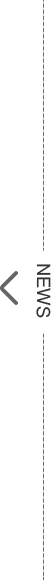
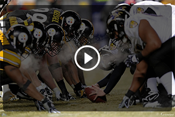

DESCRIPTION
- Drew Brees flew to Charlotte to have his foot injury evaluated by Dr. Robert Anderson, who recommended the Peyton Manning plan of 4-6 weeks of rest before easing into football and training activity, a source close to Brees told ESPN NFL Insider Ed Werder. Brees will not need surgery for the torn plantar fascia in his right heel – or for the shoulder injury he suffered earlier in the season.
- he Cowboys have made finding a backup to Tony Romo a priority. Jones told 105.3 The Fan he will likely take some risks for the QB position if "the upside is there -- that old risk/reward situation -- then yeah, we can take some risks."
-
he Cowboys have made finding a backup to Tony Romo a priority. Jones told 105.3 The Fan he will likely take some risks for the QB position if "the upside is there -- that old risk/reward situation -- then yeah, we can take some risks."The bunting is out in Cincinnati. Normally a baseball staple, the red, white and blues make it official: the playoffs are here.

RELATED
Dallas Cowboys
Wanshington Redsking
Tampa Bay Buccaneers
New England patriots